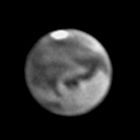
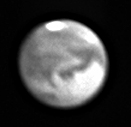
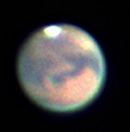
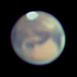
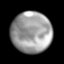
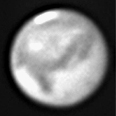
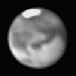
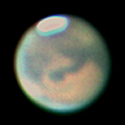
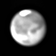
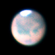

Images of Mars taken during its famous 2003 apparition. These images were taken over several nights between August 7th, and September 16th 2003.
Exposure details:
Telescope + Camera: 0.254-m SCT + ST237-A
Eyepiece Projection: 9.8mm Plossl
Magnification: Approximately 258x
Exposure: Typically less than 1 second, combination of multiple images through RGB filters.




















